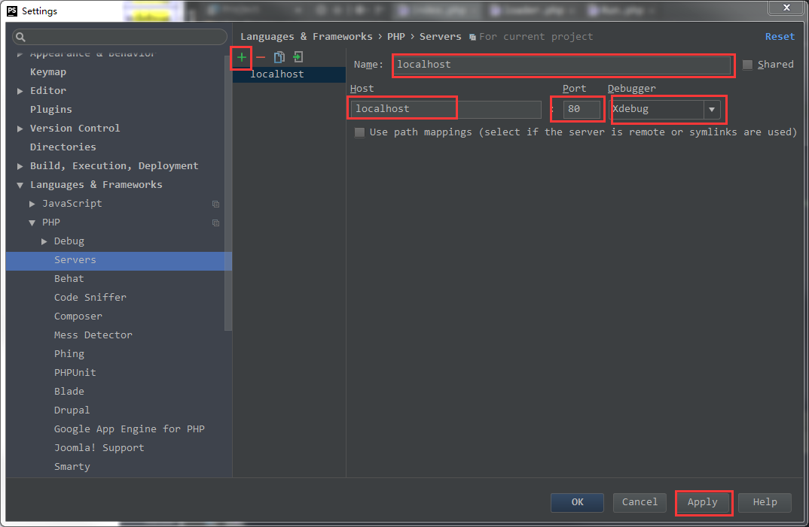
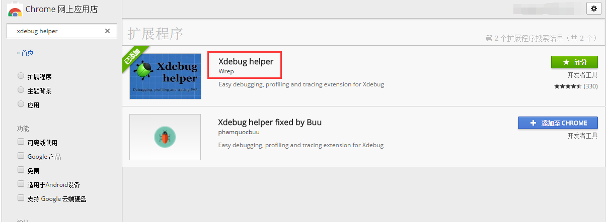
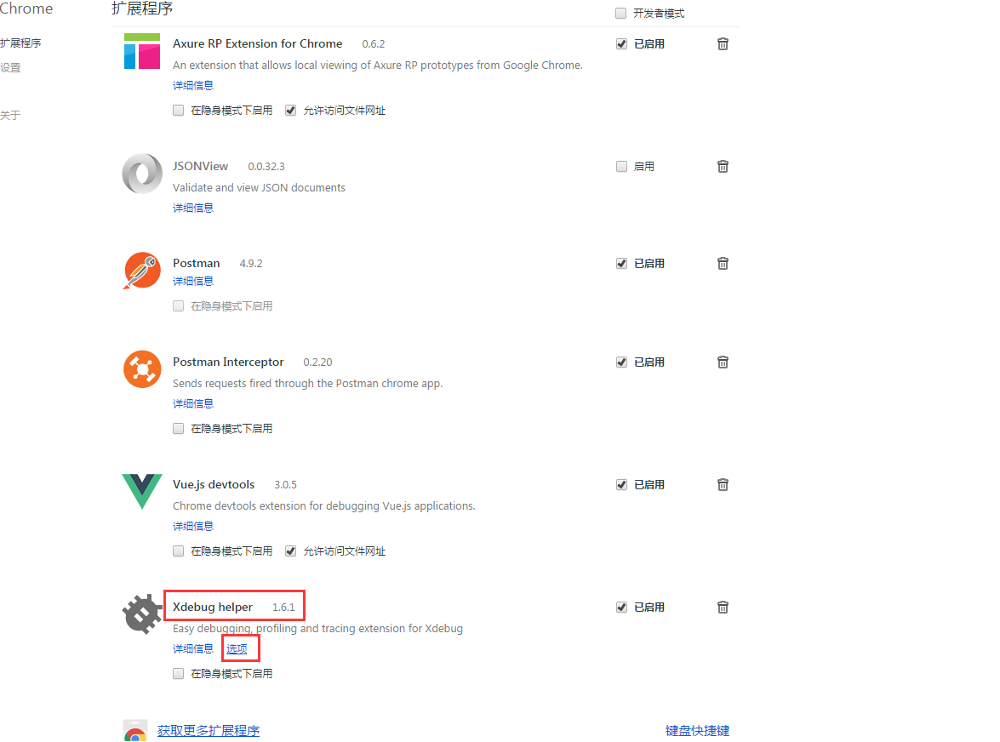
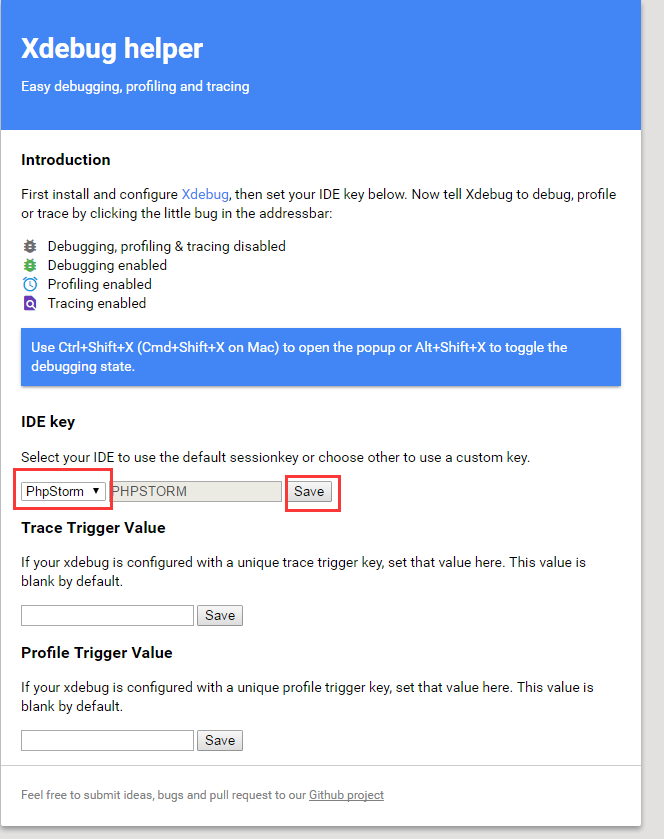
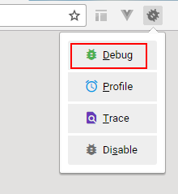
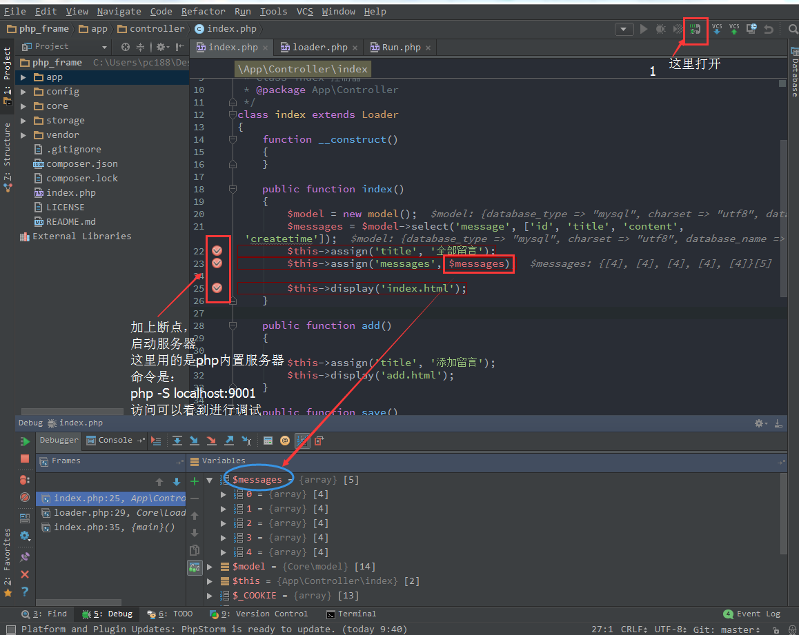

- xdebug网站下载对应版本的扩展插件
由于windows7(64位系统)上的php版本是7.0.6，此处下载的xdebug也是64位7.0的版本如图：
- 将下载的php_xdebug-2.5.0-7.0-vc14-x86_64.dll文件拷贝到php安装目录的ext文件夹中（我电脑是中D:\phpEnv\php7.0.6\ext）
- 打开php.ini文件，在末尾添加下面代码片段:
|
|
- 打开PHPstorm 这里用的版本是phpstorm2016.2.2 ，进入File—>Settings—>Languages & Frameworks—>PHP—>Servers 点击+号 添加 name： localhost
Host: localhost Port: 80 Debugger: xdebug 之后点击Apply确认
 - 进入PHP下的Debug 将xdebug的 debug port:设置为9000 和 xdebug.remote_port = 9000一致 其他默认 确定 ok即可
- 打开chrome浏览器 下载xdebug helper插件(可能要翻墙)，点击选项配置为phpstorm。如图


 - 设置插件xdebug helper 状态打开如图
 - 在phpstorme 打开下图中的按钮，设置断点，启动服务器即可进入调试查看：
